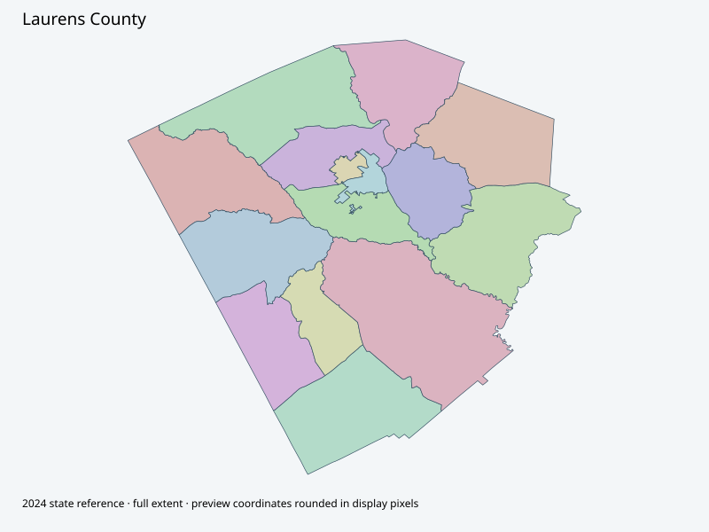

Map index · 15 explicit-FIPS 2024 map rows; 15 historical result identities. No approved crosswalk.

Full native coordinate/attribute extraction (gzip JSON) · Original complete statewide ZIP
Official District Maps link labeled Voting Precincts leads to actual countywide road/precinct map with voting-precinct panel, visually verified; PDFmetadataApr28,2025. Not just a road map; original inset/list/native labels preserved. No current approval or vote join.
Full objects, county source IDs/clocks and attributes: all 2,701 native contexts. isVirtual:false and source label precinct do not prove physical geometry.
| Source name | Full source GUID | Breakdown ordinal | Source | Map status |
|---|---|---|---|---|
| Brewton | 01000000-d884-2e72-51fa-08dcda4bd19c | 0 | 2024NovGen--laurens-county-ga | unreviewed / no approved map join |
| Buckeye | 01000000-d884-2e72-d5d2-08dcda4bd1a9 | 1 | 2024NovGen--laurens-county-ga | unreviewed / no approved map join |
| Burch | 01000000-d884-2e72-6a75-08dcda4bd1b6 | 2 | 2024NovGen--laurens-county-ga | unreviewed / no approved map join |
| Cadwell | 01000000-d884-2e72-54c1-08dcda4bd1c3 | 3 | 2024NovGen--laurens-county-ga | unreviewed / no approved map join |
| Calhoun Park | 01000000-d884-2e72-f432-08dcda4bd1cf | 4 | 2024NovGen--laurens-county-ga | unreviewed / no approved map join |
| Dudley | 01000000-d884-2e72-bffa-08dcda4bd1dc | 5 | 2024NovGen--laurens-county-ga | unreviewed / no approved map join |
| FBC-FLC | 01000000-d884-2e72-77a3-08dcda4bd1e9 | 6 | 2024NovGen--laurens-county-ga | unreviewed / no approved map join |
| Fire Dept Station #5 | 01000000-d884-2e72-5dad-08dcda4bd1f6 | 7 | 2024NovGen--laurens-county-ga | unreviewed / no approved map join |
| Hampton Mill | 01000000-d884-2e72-60af-08dcda4bd206 | 8 | 2024NovGen--laurens-county-ga | unreviewed / no approved map join |
| LCFS #10 (Valambrosia) | 01000000-d884-2e72-90a8-08dcda4bd213 | 9 | 2024NovGen--laurens-county-ga | unreviewed / no approved map join |
| Minter | 01000000-d884-2e72-3c8a-08dcda4bd220 | 10 | 2024NovGen--laurens-county-ga | unreviewed / no approved map join |
| Reedy Springs | 01000000-d884-2e72-344a-08dcda4bd22d | 11 | 2024NovGen--laurens-county-ga | unreviewed / no approved map join |
| Rural Fire Station #17 | 01000000-d884-2e72-9722-08dcda4bd23a | 12 | 2024NovGen--laurens-county-ga | unreviewed / no approved map join |
| Smith | 01000000-d884-2e72-330b-08dcda4bd247 | 13 | 2024NovGen--laurens-county-ga | unreviewed / no approved map join |
| W T Adams Fire Sta #18 | 01000000-d884-2e72-96db-08dcda4bd253 | 14 | 2024NovGen--laurens-county-ga | unreviewed / no approved map join |
| Original row ordinal | DISTRICT | PRECINCT_I | PRECINCT_N |
|---|---|---|---|
| 686 | 17512 | 12 | DUDLEY |
| 696 | 17518 | 18 | W T ADAMS FIRE STA #18 |
| 698 | 1755 | 5 | FIRE DEPT STA #5 |
| 699 | 1753 | 3 | FBC - FLC |
| 700 | 1754 | 4 | CALHOUN PARK |
| 701 | 1757 | 7 | BUCKEYE |
| 756 | 17515 | 15 | MINTER |
| 800 | 17521 | 21 | SMITH |
| 801 | 17511 | 11 | BREWTON |
| 1654 | 1758 | 8 | BURCH |
| 1655 | 17510 | 10 | CADWELL |
| 1656 | 17519 | 19 | REEDY SPRINGS |
| 1657 | 17513 | 13 | HAMPTON MILL |
| 1658 | 17516 | 16 | RURAL FIRE STA #17 |
| 1659 | 17522 | 22 | LCFS #10 (VALAMBROSIA) |